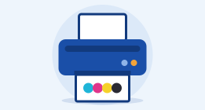

Színes nyomtatás
Digitális nyomtatás teljes színben a legújabb Canon technológiával – ofszet minőséget ér el. Szabványos papír: 100 g.
⏱ Azonnal elvihető
- Egyedileg tervezhető
- Teljes színes nyomtatás
- Magas, egyenletes, ofszethez hasonló képminőség
- Céglogó vagy szimbólumok sem jelentenek problémát
- Rasztergrafikus formátumok (jpg, png, gif, bmp stb.)
- Görbék, illetve vektorgrafikák (cdr, ai stb.)
- Fényképekhez (szöveggel együtt is) ideális
- Canon imagePress géppel készül
- Nyomtatás kiváló minőségű digitális nyomtatópapírra
Árak
- A mennyiségi kedvezmények az egy munkafolyamatban feldolgozható nyomtatási adatokra vonatkoznak.
- E-mailben, USB-meghajtón vagy más adathordozón érkező adatok átvétele esetén az első lapért legalább összeget számítunk fel.
Minden ár 20 % ÁFÁ-val együtt.